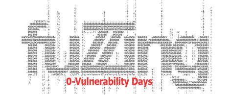
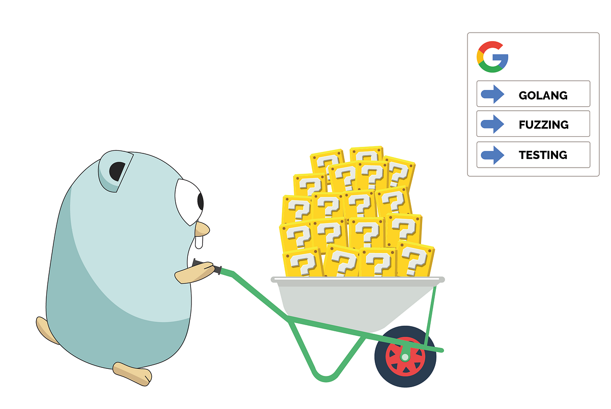

Fuzzing Web
El fuzzing web es una técnica esencial en la seguridad informática y la auditoría de aplicaciones web que se utiliza para descubrir recursos y archivos ocultos que no están fácilmente accesibles o visibles a través de métodos de navegación convencionales. Esta técnica busca identificar directorios, archivos y endpoints que podrían estar mal configurados o expuestos y que podrían ser vulnerables a ataques. A continuación, exploramos algunas de las herramientas más populares para realizar fuzzing en aplicaciones web.

Wordlists
En Kali Linux, wordlists son archivos que contienen listas de palabras o términos que se utilizan para diversas pruebas de seguridad, como el fuzzing de directorios y archivos, o ataques de fuerza bruta, usualmete ubicados en /usr/share/wordlists/. Algunas de las listas de palabras más comunes en Kali incluyen:
- directory-list-2.3-medium.txt: Una lista de directorios y archivos comunes de tamaño medio, utilizada frecuentemente en escaneos de fuzzing para encontrar rutas en aplicaciones web.
- rockyou.txt: Una lista de contraseñas muy popular que se usa para ataques de fuerza bruta debido a su tamaño extenso y la variedad de contraseñas comunes.
- common.txt: Contiene una lista de palabras y directorios comunes, útil para pruebas generales de seguridad.
Es crucial añadir el dominio al archivo /etc/hosts cuando se trabaja con pruebas de seguridad y auditorías, cuando el dominio no se resuelve automáticamente por el servidor DNS. Esto asegura que las peticiones realizadas por las herramientas de escaneo y fuzzing se dirijan correctamente al servidor objetivo. Por ejemplo, si tienes un dominio como sea.htb que se resuelve a una IP específica, agregar la siguiente línea al archivo /etc/hosts garantizará que el dominio se resuelva correctamente durante tus pruebas:
127.0.0.1 localhost
127.0.1.1 MasterSensei
10.10.11.28 sea.htb
# The following lines are desirable for IPv6 capable hosts
::1 localhost ip6-localhost ip6-loopback
ff02::1 ip6-allnodes
ff02::2 ip6-allrouters
WFuzz
WFuzz es una herramienta popular para la fuzzing de aplicaciones web, especialmente en la detección de directorios y archivos ocultos. Es conocida por su flexibilidad y capacidad de personalización.
- Permite a los usuarios elegir entre una variedad de métodos de fuzzing y opciones para adaptar el escaneo a sus necesidades específicas.
- WFuzz puede manejar diferentes tipos de payloads y técnicas de inyección.
Este comando utiliza WFuzz para realizar un escaneo de fuzzing de directorios en el servidor web ubicado en http://sea.htb. Utiliza una lista de palabras para probar posibles rutas de directorios y archivos en el servidor, ocultando respuestas con códigos 404 y 401, y utiliza 200 hilos simultáneos para acelerar el proceso. La salida del comando estará coloreada para facilitar su lectura y análisis.
ryuzak1@ubuntu:~$ wfuzz -c --hc=404,401 -t 200 -w /usr/share/wordlists/dirbuster/directory-list-2.3-medium.txt http://sea.htb/FUZZ
********************************************************
* Wfuzz 3.1.0 - The Web Fuzzer *
********************************************************
Target: http://sea.htb/FUZZ
Total requests: 220560
=====================================================================
ID Response Lines Word Chars Payload
=====================================================================
000000012: 200 86 L 262 W 3649 Ch "# on atleast 2 different hosts"
000000006: 200 86 L 262 W 3649 Ch "# Attribution-Share Alike 3.0 License. To view a copy of this"
000000001: 200 86 L 262 W 3649 Ch "# directory-list-2.3-medium.txt"
000000008: 200 86 L 262 W 3649 Ch "# or send a letter to Creative Commons, 171 Second Street,"
000000004: 200 86 L 262 W 3649 Ch "#"
000000003: 200 86 L 262 W 3649 Ch "# Copyright 2007 James Fisher"
000000005: 200 86 L 262 W 3649 Ch "# This work is licensed under the Creative Commons"
000000011: 200 86 L 262 W 3649 Ch "# Priority ordered case sensative list, where entries were found"
000000002: 200 86 L 262 W 3649 Ch "#"
000000007: 200 86 L 262 W 3649 Ch "# license, visit http://creativecommons.org/licenses/by-sa/3.0/"
000000010: 200 86 L 262 W 3649 Ch "#"
000000013: 200 86 L 262 W 3649 Ch "#"
000000038: 200 86 L 262 W 3649 Ch "home"
000000009: 200 86 L 262 W 3649 Ch "# Suite 300, San Francisco, California, 94105, USA."
000000014: 200 86 L 262 W 3649 Ch "http://sea.htb/"
000000124: 200 86 L 262 W 3649 Ch "0"
000000127: 301 7 L 20 W 230 Ch "themes"
000000519: 301 7 L 20 W 231 Ch "plugins"
000000955: 301 7 L 20 W 232 Ch "messages"
000001559: 200 84 L 209 W 3340 Ch "404"
- -c: Activa el modo de color en la salida, facilitando la visualización de los resultados.
- --hc=404,401: Oculta las respuestas con los códigos de estado HTTP 404 (No encontrado) y 401 (No autorizado) en los resultados, para que solo se muestren las respuestas que no correspondan a estos códigos.
- -t 200: Define el número de hilos simultáneos (threads) a 200, lo que permite realizar el escaneo de manera más rápida al procesar múltiples solicitudes en paralelo.
- -w: Especifica la lista de palabras utilizada para el fuzzing. En este caso, se usa una lista de directorios y archivos comunes proporcionada por DirBuster.
- http://sea.htb/FUZZ: La URL objetivo donde se realizará el fuzzing, con FUZZ como marcador de posición que será reemplazado por cada entrada de la lista de palabras.
Este comando realiza un escaneo de fuzzing en el servidor web en http://sea.htb, probando directorios y archivos con combinaciones de nombres y extensiones (php, html, txt). Utiliza una lista de palabras para generar los nombres de archivo y oculta las respuestas 404 para centrarse en recursos existentes. La salida es coloreada para facilitar su análisis y el uso de 200 hilos acelera el proceso.
ryuzak1@ubuntu:~$ wfuzz -c --hc=404,401 -t 200 -w /usr/share/wordlists/dirbuster/directory-list-2.3-medium.txt -z list,php-html-txt http://sea.htb/FUZZ
********************************************************
* Wfuzz 3.1.0 - The Web Fuzzer *
********************************************************
Target: http://sea.htb/FUZZ.FUZ2Z
Total requests: 661680
=====================================================================
ID Response Lines Word Chars Payload
=====================================================================
000000001: 200 86 L 262 W 3649 Ch "# directory-list-2.3-medium.txt - php"
000000013: 200 86 L 262 W 3649 Ch "# This work is licensed under the Creative Commons - php"
000000020: 200 86 L 262 W 3649 Ch "# license, visit http://creativecommons.org/licenses/by-sa/3.0/ - h
tml"
000000016: 200 86 L 262 W 3649 Ch "# Attribution-Share Alike 3.0 License. To view a copy of this - php
"
000000009: 200 86 L 262 W 3649 Ch "# Copyright 2007 James Fisher - txt"
000000018: 200 86 L 262 W 3649 Ch "# Attribution-Share Alike 3.0 License. To view a copy of this - txt
. . . [ snip ] . . .
000000038: 200 86 L 262 W 3649 Ch "# - html"
000000028: 200 86 L 262 W 3649 Ch "# - php"
000000025: 200 86 L 262 W 3649 Ch "# Suite 300, San Francisco, California, 94105, USA. - php"
000000024: 200 86 L 262 W 3649 Ch "# or send a letter to Creative Commons, 171 Second Street, - txt"
000000022: 200 86 L 262 W 3649 Ch "# or send a letter to Creative Commons, 171 Second Street, - php"
000000073: 200 118 L 226 W 2731 Ch "contact - php"
- -z list,php-html-txt: Usa el modo de fuzzing basado en combinaciones (-z) para añadir extensiones a los nombres de archivo probados. En este caso, php, html y txt se agregarán a cada entrada de la lista de palabras, generando combinaciones como index.php, admin.html, backup.txt, etc.
- http://sea.htb/FUZZ.FUZ2Z: La URL objetivo donde se realizará el fuzzing. El marcador de posición FUZZ será reemplazado por cada entrada de la lista de palabras, y el marcador FUZ2Z será reemplazado por las extensiones especificadas.
Con este comando las respuestas te ayudarán a entender cómo el servidor maneja distintos caracteres especiales en las solicitudes.
ryuzak1@ubuntu:~$ wfuzz -c -X POST -H "Content-type:application/json" -s 1 -w /usr/share/wordlists/seclists/Fuzzing/special-chars.txt -d '{"name":"FUZZ"}' http://sea.htb
********************************************************
* Wfuzz 3.1.0 - The Web Fuzzer *
********************************************************
===============================================================
ID Response Lines Word Chars Payload
===============================================================
000000001: 200 10 32 120 {"name":"~"}
000000002: 200 12 35 138 {"name":"!"}
000000003: 200 11 34 125 {"name":"@"}
000000004: 500 8 20 85 {"name":"#"}
000000005: 404 6 18 67 {"name":"$"}
000000006: 200 14 38 145 {"name":"%"}
. . . [ snip ] . . .
- -X POST: Utiliza el método POST para las solicitudes HTTP, en lugar del método GET.
- -H "Content-type:application/json": Establece el encabezado HTTP Content-type a application/json, indicando que el cuerpo de la solicitud está en formato JSON.
- -s 1: Establece un retraso de 1 segundo entre cada solicitud para evitar sobrecargar el servidor.
- -d '{"name":"FUZZ"}': Define el cuerpo de la solicitud POST en formato JSON, con el marcador FUZZ reemplazado por cada entrada de la lista de caracteres especiales.
Este comando prueba diferentes subdominios bajo el dominio permx.htb, haciendo peticiones al servidor en la IP 10.10.11.23. El encabezado Host es modificado dinámicamente para cada subdominio. Al excluir los códigos de redirección (301 y 302), se enfocará solo en respuestas de interés, como códigos 200 (OK) o 403 (Forbidden).
ryuzak1@ubuntu:~$ wfuzz -c --hc=301,302 -t 200 -w /usr/share/wordlists/seclists/Discovery/DNS/subdomains-top1million-110000.txt -u http://10.10.11.23/ -H "Host:FUZZ.permx.htb"
********************************************************
* Wfuzz 3.1.0 - The Web Fuzzer *
********************************************************
Target: http://10.10.11.23/
Total requests: 114441
=====================================================================
ID Response Lines Word Chars Payload
=====================================================================
000000001: 200 586 L 2466 W 36182 Ch "www"
000000477: 200 352 L 940 W 19347 Ch "lms"
000001417: 302 9 L 26 W 278 Ch "dr"
- -H "Host:FUZZ.permx.htb": Usa el encabezado HTTP Host para simular solicitudes a diferentes subdominios, reemplazando FUZZ con cada subdominio de la lista de palabras. Por ejemplo, admin.permx.htb, test.permx.htb, etc.
Gobuster
Gobuster es una herramienta de fuzzing rápida para la enumeración de directorios y archivos en servidores web. Utiliza una lista de palabras para realizar el escaneo de recursos en el servidor.
- Gobuster está diseñado para ser muy rápido en la enumeración de directorios.
- Soporta el uso de proxies para realizar escaneos a través de ellos.
Este comando realiza un escaneo de virtual hosts (vhosts) en el dominio sea.htb, eliminando de la salida los códigos de estado 301, 302 y 404.
ryuzak1@ubuntu:~$ gobuster vhost -t 100 -w /usr/share/wordlists/dirbuster/directory-list-2.3-medium.txt -u http://sea.htb -k | grep -v "302" | grep -v "301" | grep -v "404"
===============================================================
Gobuster v3.6
by OJ Reeves (@TheColonial) & Christian Mehlmauer (@firefart)
===============================================================
[+] Url: http://sea.htb
[+] Method: GET
[+] Threads: 100
[+] Wordlist: /usr/share/wordlists/dirbuster/directory-list-2.3-medium.txt
[+] User Agent: gobuster/3.6
[+] Timeout: 10s
[+] Append Domain: false
[+] Exclude Length: 3630,3635,3640,3645,3650,3655
===============================================================
Starting gobuster in VHOST enumeration mode
===============================================================
Found: www Status: 200 [Size: 3630]
Found: lms Status: 200 [Size: 1834]
- vhost: Ejecuta el modo vhost de Gobuster para enumerar subdominios virtuales (virtual hosts).
- -k: Ignora problemas con certificados SSL si la URL utiliza HTTPS. En este caso, como es HTTP, no es esencial, pero lo puedes dejar si el servidor redirige a HTTPS.
- -t 100: Establece 100 hilos para hacer el escaneo más rápido.
- grep -v "302", grep -v "301", grep -v "404": Filtra la salida para eliminar los resultados que contengan los códigos de estado 301 (Redirección Permanente), 302 (Redirección Temporal), y 404 (No Encontrado).

FFUF (Fuzz Faster U Fool)
FFUF es una herramienta rápida y eficiente para la fuzzing de directorios y archivos en aplicaciones web. Su diseño enfocado en la velocidad y la eficiencia permite a los usuarios realizar escaneos con gran rapidez.
- Aunque es más comúnmente utilizada para HTTP/HTTPS, también puede utilizarse con otros protocolos.
- Permite la personalización de los encabezados HTTP, métodos de solicitud y otros parámetros para adaptarse a diferentes escenarios.
- Se puede usar en conjunto con otros comandos y herramientas para mejorar la cobertura del escaneo.
El comando realiza un fuzzing de subdominios utilizando FFUF.
ryuzak1@ubuntu:~$ ffuf -w /usr/share/wordlists/seclists/Discovery/DNS/subdomains-top1million-110000.txt -u http://10.10.11.23 -H "Host: FUZZ.permx.htb" -mc 200
/'___\ /'___\ /'___\
/\ \__/ /\ \__/ __ __ /\ \__/
\ \ ,__\\ \ ,__\/\ \/\ \ \ \ ,__\
\ \ \_/ \ \ \_/\ \ \_\ \ \ \ \_/
\ \_\ \ \_\ \ \____/ \ \_\
\/_/ \/_/ \/___/ \/_/
v2.1.0-dev
________________________________________________
:: Method : GET
:: URL : http://10.10.11.23
:: Wordlist : FUZZ: /usr/share/wordlists/seclists/Discovery/DNS/subdomains-top1million-110000.txt
:: Header : Host: FUZZ.permx.htb
:: Follow redirects : false
:: Calibration : false
:: Timeout : 10
:: Threads : 40
:: Matcher : Response status: 200
________________________________________________
www [Status: 200, Size: 36182, Words: 12829, Lines: 587, Duration: 240ms]
lms [Status: 200, Size: 19347, Words: 4910, Lines: 353, Duration: 115ms]
- -H "Host: FUZZ.permx.htb": Usa el encabezado HTTP Host donde FUZZ será reemplazado por cada subdominio de la lista. Ejemplo de subdominios probados: admin.permx.htb, mail.permx.htb, etc.
- -mc 200: Filtra las respuestas del servidor para mostrar solo aquellas que devuelven el código de estado 200 (OK), lo que indica que el subdominio existe y está accesible.
Feroxbuster
Feroxbuster es una herramienta de fuzzing de contenido escrita en Rust que se utiliza para descubrir directorios y archivos ocultos en aplicaciones web. Se destaca por su velocidad y eficiencia, aprovechando el poder de la concurrencia y las ventajas de Rust en el manejo de múltiples hilos.
- Es extremadamente rápida gracias a la implementación en Rust y al uso de solicitudes concurrentes.
- Soporta búsquedas recursivas, permitiendo profundizar en subdirectorios automáticamente.
- Ofrece una interfaz intuitiva, compatible con varias opciones de personalización como proxies, encabezados personalizados y manejo de autenticación.
Feroxbuster te permite realizar un análisis rápido y eficiente en aplicaciones web para descubrir contenido oculto. En este caso, se utiliza para escanear el dominio freelancer.htb, buscando directorios y archivos que podrían estar expuestos pero no listados públicamente.
ryuzak1@ubuntu:~$ feroxbuster -n -u http://freelancer.htb -C 503
___ ___ __ __ __ __ __ ___
|__ |__ |__) |__) | / ` / \ \_/ | | \ |__
| |___ | \ | \ | \__, \__/ / \ | |__/ |___
by Ben "epi" Risher 🤓 ver: 2.10.3
───────────────────────────┬──────────────────────
🎯 Target Url │ http://freelancer.htb
🚀 Threads │ 50
📖 Wordlist │ /usr/share/seclists/Discovery/Web-Content/raft-medium-directories.txt
💢 Status Code Filters │ [503]
💥 Timeout (secs) │ 7
🦡 User-Agent │ feroxbuster/2.10.3
💉 Config File │ /etc/feroxbuster/ferox-config.toml
🏁 HTTP methods │ [GET]
🚫 Do Not Recurse │ true
───────────────────────────┴──────────────────────
🏁 Press [ENTER] to use the Scan Management Menu™
──────────────────────────────────────────────────
404 GET 334l 690w 12238c Auto-filtering found 404-like response and created new filter; toggle off with --dont-filter
301 GET 0l 0w 0c http://freelancer.htb/admin => http://freelancer.htb/admin/
200 GET 1247l 2523w 57293c http://freelancer.htb/
301 GET 0l 0w 0c http://freelancer.htb/blog => http://freelancer.htb/blog/
[####################] - 2m 30000/30000 0s found:3 errors:0
[####################] - 2m 30000/30000 205/s http://freelancer.htb/
- -n: Desactiva la búsqueda recursiva, enfocándose solo en el nivel del directorio especificado sin escanear subdirectorios.
- -C 200: Muestra solo las respuestas con el código de estado HTTP 200 (OK), lo que indica que el recurso existe y es accesible.
Dirsearch
Dirsearch es una herramienta de fuzzing de directorios escrita en Python que se centra en la simplicidad y la facilidad de uso. Está diseñada para encontrar archivos y directorios en aplicaciones web.
- Su diseño y comandos simples la hacen accesible para usuarios de todos los niveles.
- Permite el uso de proxies y proporciona opciones para manejar autenticación básica.
Utiliza Dirsearch, una herramienta de línea de comandos para realizar fuzzing de directorios y archivos en aplicaciones web. En este caso, está apuntando al dominio sea.htb para descubrir posibles directorios y archivos ocultos en el servidor.
ryuzak1@ubuntu:~$ dirsearch -u http://sea.htb/
/usr/lib/python3/dist-packages/dirsearch/dirsearch.py:23: DeprecationWarning: pkg_resources is deprecated as an API. See https://setuptools.pypa.io/en/latest/pkg_resources.html
from pkg_resources import DistributionNotFound, VersionConflict
_|. _ _ _ _ _ _|_ v0.4.3
(_||| _) (/_(_|| (_| )
Extensions: php, aspx, jsp, html, js | HTTP method: GET | Threads: 25 | Wordlist size: 11460
Output File: /home/orfeo/Documentos/HTB/Permx/reports/http_sea.htb/__24-09-08_01-26-10.txt
Target: http://sea.htb/
[01:26:10] Starting:
[01:26:28] 403 - 199B - /%3f/
[01:26:41] 403 - 199B - /.ht_wsr.txt
[01:26:41] 403 - 199B - /.htaccess.bak1
[01:26:41] 403 - 199B - /.htaccess.orig
[01:26:41] 403 - 199B - /.htaccess.save
[01:26:41] 403 - 199B - /.htaccess_sc
[01:26:41] 403 - 199B - /.htpasswds
[01:26:41] 403 - 199B - /.htm
[01:26:41] 403 - 199B - /.htaccess_extra
[01:26:41] 403 - 199B - /.htpasswd_test
[01:26:41] 403 - 199B - /.htaccess_orig
[01:26:41] 403 - 199B - /.httr-oauth
[01:26:41] 403 - 199B - /.htaccessBAK
[01:26:41] 403 - 199B - /.htaccessOLD2
[01:26:41] 403 - 199B - /.html
[01:26:41] 403 - 199B - /.htaccessOLD
[01:26:41] 403 - 199B - /.htaccess.sample
[01:26:48] 403 - 199B - /.php
[01:26:58] 200 - 1KB - /404
[01:27:10] 403 - 199B - /admin%20/
[01:28:18] 200 - 939B - /contact.php
[01:28:24] 301 - 228B - /data -> http://sea.htb/data/
[01:28:24] 403 - 199B - /data/
[01:28:24] 403 - 199B - /data/files/
[01:29:18] 403 - 199B - /login.wdm%20
[01:29:28] 301 - 232B - /messages -> http://sea.htb/messages/
[01:29:39] 403 - 199B - /New%20folder%20(2)
[01:29:39] 403 - 199B - /New%20Folder
[01:29:55] 403 - 199B - /phpliteadmin%202.php
[01:30:04] 403 - 199B - /plugins/
[01:30:04] 301 - 231B - /plugins -> http://sea.htb/plugins/
[01:30:14] 403 - 199B - /Read%20Me.txt
[01:30:25] 403 - 199B - /server-status/
[01:30:25] 403 - 199B - /server-status
[01:30:50] 403 - 199B - /themes/
[01:30:50] 301 - 230B - /themes -> http://sea.htb/themes/
Task Completed